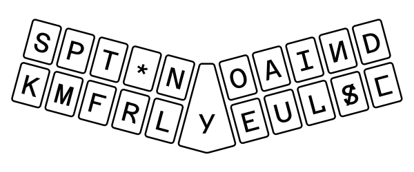
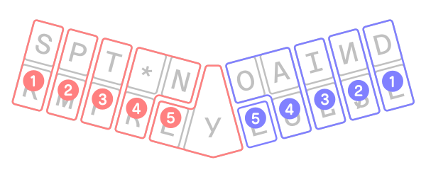
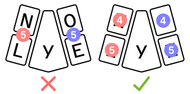
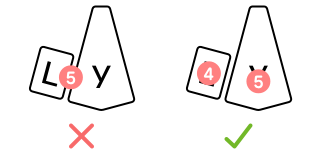
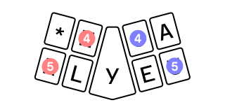

En la Estenotipia no se utilizan signos, sino las letras del alfabeto, como en la máquina de escribir, con la diferencia que en la Estenotipia se imprimen muchas letras a la vez. Por ejemplo:
Stenotype does not use signs, but rather letters of the alphabet, much like a typewriter, with the difference that stenotype writes out multiple letters at once. For example:
Con la máquina de escribir se necesitarían 5 pulsaciones y un espacio, mientras que este sistema no se necesitan más que 3 pulsaciones.
Con cada pulsación el papel adelanta automáticamente una línea.
La posición de los dedos será sobre las teclas inferiores. Siempre que pulsemos utilizando teclas de la fila de arriba, los dedos deben volver a su posición inicial, es decir, a la fila inferior.
Writing this word on a typewriter requires 5 keystrokes and a space, whereas with this system it doesn't need more than 3 keystrokes.
With each keystroke the paper advances automatically by one line.
The position of the fingers are over the lower row of keys. Whenever we press using keys on the top row, the fingers must return to their initial position, that is, to the bottom row.
La letra S sirve para
La letra K sirve para
La letra P sirve para
La letra M sirve para
La letra T sirve para
La letra F sirve para
El signo * sirve para
y: jaspe)La letra R sirve para
La letra N sirve para
La letra L sirve para
La letra y sirve para
La letra O sirve para
La letra E sirve para
La letra A sirve para
La letra U sirve para
La letra I sirve para
Las teclas que vamos a ver a continuación se emplean para sílabas mixtas e inversas.
La letra l sirve para
La letra n sirve para
La letra s sirve para
La letra D sirve para
c final: patente)La letra c sirve para
Las letras KN se utilizan para designar el sonido Ñ. Por ejemplo: niño.
Las letras SK se utilizan para designar el sonido CH. Por ejemplo: chico.
La letra S se utiliza para designar el sonido X. Por ejemplo: xilofón.
The S key represents
The K key represents
The P key represents
The M key represents
The T key represents
The F key represents
The * key represents
y: jaspe)The R key represents
The N key represents
The L key represents
The y key represents
The O key represents
The E key represents
The A key represents
The U key represents
The I key represents
The following keys are used for mixed and inverted syllables.
The l key represents
The n key represents
The s key represents
The D key represents
c: patente)The c key represents
The KN chord is used to represent the sound Ñ. For example: niño.
The SK chord is used to represent the sound CH. For example: chico.
The S key is used to represent the sound X. For example: xilofón.
El dedo meñique ① de la mano izquierda está sobre la K.
El anular ② está sobre la letra M.
El dedo corazón ③ está sobre la letra F.
El dedo índice ④ está sobre la letra R.
El pulgar ⑤ está sobre la letra L. Con el mismo dedo pulgar, estirándolo un poco hacia la derecha pulsa también la letra y. Una vez efectuada la pulsación el dedo debe volver a su posición correcta sobre la letra L.
Mientras se efectúa una pulsación, los dedos que no se utilizan deben permanecer en su posición, en la fila inferior.
The left pinky finger ① is for the K key.
The ring finger ② is for the M key.
The middle finger ③ is for the F key.
The index finger ④ is for the R key.
The thumb ⑤ is for the L key. You can also shift this finger slightly to the right to hit the y key. Once the key has been stroked, your finger should move back to the initial position over the L key.
When a chord is being written, the fingers that are not being used must remain in their home positions on the bottom row.
El dedo meñique ① está sobre la letra c.
El dedo anular ② está sobre la letra s.
El dedo corazón ③ está sobre la letra l.
El dedo índice ④ está sobre la letra U.
El dedo pulgar ⑤ está sobre la letra E.
The right pinky finger ① is for the c key.
The ring finger② is for the s key.
The middle finger ③ is for the l key.
The index finger ④ is for the U key.
The thumb ⑤ is for the E key.

Las manos izquierda y derecha permanecerán en la fila inferior. Siempre que empleemos teclas de la fila superior, se hará de la siguienta manera:
El dedo meñique de la mano izquierda ① sube a la letra S. El resto de los dedos permanecen inmóviles en la mano inferior. Una vez pulsada la letra S, el dedo volverá a su tecla correspondiente, en la letra K.
El dedo anular ② sube hasta la letra P, y vuelve después a la M.
El dedo corazón ③ sube desde la letra F a la T, y vuelve después a su posición inicial sobre la F.
El dedo índice ④ sube de la letra R, hasta el * (asterisco), y estirándolo un poco hacia la derecha, pulsa también la letra N, volviendo otra vez a su posición inicial sobre la R.
El dedo pulgar ⑤ nunca puede pulsar teclas de la fila superior.
The left and right hands have a home position on the bottom row. Whenever you need to use the keys on the top row, they should be pressed as follows:
The left pinky finger ① is for the S key. The rest of the fingers remain on the lower row. Once the S key is pressed, the finger will return to its home position on the K key.
The ring finger ② is for the P key, then goes back to the M key.
The middle finger ③ is for the T key, then goes back to the F key.
The index finger ④ is for the * key, and can also be shifted to the right to press the N key, then returning to the R key.
The thumb ⑤ should never be used to press any keys on the top row.
El dedo meñique de la mano derecha ① sube desde la c hasta la letra D, volviendo después a su posición inicial sobre la c.
El dedo anular ② sube desde la s hasta la n, y vuelve después a la letra s.
El dedo corazón ③ va hasta la I, y de nuevo vuelve a la letra l una vez efectuada la pulsación.
El dedo índice ④ sube la U hasta la letra A, y alargándolo un poco hacia la izquierda, pulsa también la letra O, volviendo después a su posición inicial sobre la letra U.
El dedo pulgar ⑤ permanece en la fila inferior, sobra la letra E ya que lo mismo que ocurre con la mano izquierda, el pulgar nunca puede subir a la fila superior.
The right pinky finger ① is for the D key, then goes back to the c key.
The ring finger ② is for the n key, then goes back to the s key.
The middle finger ③ is for the I key, then goes back to the l key.
The index finger ④ is for the A key, and can also be shifted to the left to press the O key, then returning to the U key.
The thumb ⑤ remains in the bottom row, for the E key. As with the left hand, the right thumb can never go to the top row.
Para escribir SK en una sola pulsación, colocamos la extremidad del dedo meñique entre las 2 teclas. Esta posición se llama a caballo. El dedo debe estar ligeramente doblado entre las 2 teclas, nunca se pondrá extendido.
Del mismo modo escribiremos PM con la extremidad del dedo anular, curvada sobre las 2 teclas.
Para escribir TF colocaremos el dedo corazón a caballo entre la T y la F.
Ya hemos visto que el dedo pulgar no puede subir nunca a la fila superior. Por tanto, cuando queramos escribir en una sola pulsación NL subiremos el dedo índice hasta la N y el pulgar queda sobre la L.
To write SK in one stroke, place the tip of your left pinky between the two keys. This position is called a caballo, or straddling. The finger should be slightly bent between the two keys, rather than fully extended.
We use this same method to write PM with the ring finger between the two keys.
To write TF, place your middle finger so that it straddles the T and F keys.
We've already seen that the thumb may not be used to press keys on the top row, so if we want to write NL in a single stroke, we need to move the index finger to the N key, such that the thumb remains on the L key:

Vamos a ver ahora otra excepción en la colocación de los dedos. Para escribir Ly en una sola pulsación, colocamos el dedo pulgar sobre la y y el dedo índice se desplaza desde la R hasta la L.
Now, let's look at another exception to this fingering pattern. To write Ly in one stroke, place your thumb on the y key, and move your index finger over to the L key:

A continuación vamos a utilizar la mano derecha:
Para escribir en una sola pulsación Dc colocamos el dedo meñique a caballo, entre la D y la c. Recuerde que el dedo debe permanecer curvado, nunca extendido sobre las teclas.
Seguiremos el mismo procedimiento para escribir ns. Coloque el dedo anular, curvado, sobre las teclas n y s. Recuerde que debe volver el dedo a su posición inicial una vez efectuada la pulsación.
Para escribir Il, colocamos el dedo corazón a caballo entre las letras I-l.
Para escribir AU, colocamos el dedo índice curvado entre la A y la U.
Para escribir OE, y aplicando la misma excepción que en la mano izquierda, subimos el dedo índice hasta la O y el dedo pulgar permanece sobre la E.
Vamos a ver ahora una última exceptión a las reglas de colocación de dedos. Siempre que sea necesario utilizar las letras RN en una sola pulsación, subiremos el dedo índice desde la R hasta la N, al mismo tiempo que desplazamos el dedo pulgar desde la L hasta la R.
La misma regla aplicamos en la mano derecha, para escribir OU, es decir: el dedo índice se estira hasta le letra O y el pulgar se desplaza desde la E a la U.
We continue on the right hand:
To write Dc in one stroke, place your right pinky finger so that it straddles the D and c keys. Remember that your finger should remain curved, rather than extended over the keys.
We follow the same procedure to write ns. Place your ring finger over both the n and s keys. Remember to return your finger to its initial position once you have pressed it.
To write Il, place your middle finger straddling the I and l keys.
To write AU, place your index finger straddling the A and U keys.
To write OE, follow the same exception used on the left hand: place your index finger on the O key such that the thumb remains on the E key.
Let's look at one last exception to the fingering patterns. Whenever you need to write RN in one stroke, move the index finger to the N key, and the thumb to the R key.
The same rule applies on the right hand, to write OU, that is: the index finger moves to the O key, and the thumb to the U key.

Para diferenciar los nombres propios, daremos después de cada nombre y de una sola pulsación, todo el teclado de la fila inferior:
To distinguish proper names, we can write the entire bottom row in a single key press after the name:
Se escribirán en una sola pulsación las palabras siguientes:
The following words will be written in a single stroke:
El grupo ue se representa por OE para evitar dos pulsaciones:
The OE chord is used to write ue to avoid a second stroke:
El grupo ua se representa por OA para evitar dos pulsaciones:
The OA chord is used to write ua to avoid a second stroke:
El grupo eo se representa por EU para evitar dos pulsaciones:
The EU chord is used to write eo to avoid a second stroke:
El grupo ao se representa por AU para evitar dos pulsaciones:
The AU chord is used to write ao to avoid a second stroke:
Recordando las explicaciones anteriores, vamos a ver ahora cómo se escriben algunas palabras fáciles, sin olvidar que la Estenotipia se escribe fonéticamente.
El sonido a está representado por la letra A:
Keeping the previous explanations in mind, let's take a look at how to write some easy words, without forgetting that Stenotype is written phonetically.
The a sound is written with the A key:
El sonido e se representa con la letra E:
The e sound is written with the E key:
El sonido i está representado, en general, por la letra I (I Latina):
The i sound is generally written with the I key:
Delante de una vocal, el sonido i está representado por la letra y (Y Griega):
Before a vowel, the i sound is written with the y key:
El sonido o está representado por la letra O:
The o sound is written with the O key:
El sonido eo está representado por EU para evitar 2 golpes:
The eu sound is written with the EU chord to avoid a second stroke:
El grupo ao se representa por AU para evitar 2 golpes:
The ao sound is written with the AU chord to avoid a second stroke:
El sonido u está representado por la letra U:
The u sound is written with the U key:
El grupo ue se representa por OE para evitar 2 golpes:
The ue sound is written with the OE chord to avoid a second stroke:
El grupo ua se representa por OA para evitar 2 golpes, para lo cual colocamos el dedo índice de la mano derecha entre las teclas O y A.
The ua sound is written with the OA chord to avoid a second stroke, by pressing the O and A keys with the right index finger:
El sonido ch se escribe SK, con la extremidad del dedo meñique, a caballo sobre las dos teclas:
The ch sound is written with SK, with the left pinky finger straddling the two keys:
El sonido ñ se escribe con KN, usando la mano izquierda:
The ñ sound is written with KN on the left hand:
Todos los sonidos o palabras que llevan la consonante m seguida de las letras b o p, se escriben con la letra n. No hay que olvidar que en la Estenotipia no se escribe ortográficamente, sino por sonidos.
All words that have the m consonant followed by either b or p are written with the n key. Don't forget that Stenotype is not written orthographically, but rather with sounds.
Las consonantes que prácticamente no se pronuncian, se suprimen en la escritura:
Consonants that are not pronounced in practice can also be omitted in writing:
NOTA: A partir de ahora, cuando se desee anular una pulsación equivocada, golpee 2 veces sobre las letras finales Ulsc Ulsc. Estas letras, muy visibles sobre la banda de papel, significan error, anulación de la última pulsación.
NOTE: From now on, when you want to cancel a misstroke, write the final letters Ulsc Ulsc twice. These letters are very visible on the paper tape and represent error, or cancellation of the previous stroke.
La letra e se suprimirá de ahora en adelante, para evitar más pulsaciones:
The e sound can be removed from now on, to avoid further keystrokes:
En las expresiones de la, que nos, y otras similares, cuyo primer componente acabe en e, se suprime esta letra, efectuando una contracción que nos permite ahorrar una pulsación:
In expressions such as de la and que nos, whose first component ends in e, this letter is also removed, making a contraction that allows us to save a keystroke:
Sin embargo: del = TEl, porque el suprimir la e no nos evita ninguna pulsación, ya que la E está situada entre la T y la l.
Empleamos la letra c de la derecha del teclado como e, lo que nos permitirá reunir 2 sílabas:
However, del = TEl, since omitting the e does not save a stroke, and the E is situated between T and l.
We use the c key on the right hand as an e sound, which lets us connect two syllables:
Acabamos de ver que con objeto de evitar una pulsación la c se puede utilizar como e. También se puede efectuar este mismo cambio en medio de las palabras.
We've just seen that c can be used to represent e in order to avoid a keystroke. This same rule can also be used in the middle of words:
El signo l sirve para representar la letra l y la r en los finales de sílabas:
The l key represents the l and r sounds at the end of syllables:
El signo s sirve para los sonidos s, z, v, y f:
The s key represents the s, z, v, and f sounds:
El signo D sirve para representar los sonidos d, t, p, y b:
The D key represents the d, t, p, and b sounds:
Siempre que tengamos un nombre propio, para poder destacarlo en la banda, lo subrayaremos, para lo cual pulsaremos al mismo tiempo todas las teclas de la fila inferior:
Whenever we have a proper name, in order to highlight it in the paper tape, we will underline it by pressing all the keys in the lower row at once:
Hemos visto en lecciones anteriores que la letra c la empleamos para representar el sonido de la e. Ahora vamos a explicar otras utilizaciones de esta letra.
Escribimos con c todas las palabras que tengan el sonido que, tanto si se encuentra al final como en medio de las palabras, y también cuando nos sirva para unir 2 palabras:
We've seen in previous lessons that we use the c key to represent the e sound. Now we take a look at the other uses of this key.
We use c to write all the words that have the que sound, whether in the middle or at the end of a word, and also when it is used to join two words:
También escribimos con la c todas aquellas palabras que llevan el sonido gue, tanto si están acentuadas como si no:
We also use the c key to write words with the gue sound, whether stressed or unstressed:
Suprimimos la e de comienzo de palabra, con el fin de ahorrar una pulsación:
We can delete the e at the beginning of a word in order to save a keystroke:
El sonido x al comienzo de palabra y cuando va seguido de una consonante, se escvribe con la letra S:
The x sound at the beginning of a word or when followed by a consonant is written with the S key:
En los adjetivos polisílabos terminados en able, ible, etc., dicha sílaba se convierte en D.
The last syllable in adjectives ending in able, ible, etc. can be written with the D key:
Cuando la sílaba ble, bli se encuentra en medio de la palabra, se puede emplear la misma regla:
When the syllable ble or bli occurs in the middle of a word, we can also use this rule:
La palabra una, por ser de uso muy frecuente, la escribiremos de una sola pulsación, sustituyendo en este caso, y como única excepcíon, la letra A por la c, de modo que escribiremos Unc.
En aquellas palabras en las que para indicar el plural nos vamos obligados a hacer una pulsación más podemos escribirlas en singular, no teniendo ningún problema a la hora de traducción, ya que el hecho de que sea singular o plural viene indicado por el contenido de la lectura.
Due to its high frequency, the word una is written in one stroke by replacing the A key with c, as in: Unc.
Words that require one more stroke to indicate a plural can be written in the singular without having any issues with regard to translation, since whether the word is singular or plural is indicated by the context when reading.
El sonido de la j y de la g fuerte se escribe con el signo *y:
The j and hard g sounds are written with the *y chord:
Cuando el sonido gi va seguido por la vocal a o por la o, se suprime la I:
When the gi sound is followed by an a or o vowel, we can omit the I:
Cuando la letra u va delante de la a, sustituimos la u por la letra O, es decir, el sonido ua lo escribimos OA:
When the u sound is followed by an a, the u can be replaced with an O key, that is, ua is represented by OA:
Cuando la letra u va delante de la e, se sustituye por la O. El sonido ue lo escribimos OE:
When the u sound is followed by an e, the u can be replaced with an O key. The ue sound is represented by OE:
En los gerundios y en todas aquellas palabras que terminen en ando, endo, y undo, eliminamos la última letra, la o:
In gerunds and all words that end in ando, endo, and undo, the final o can be omitted:
En las palabras polisílabas acabadas en asmo, ismo se suprime la sílaba mo:
In words ending in asmo and ismo, the mo syllable can be omitted:
Las palabras terminadas en ista, las escribimos IsD. Quitamos la a y sustituímos la t por la D.
For words ending in ista, we write IsD. We omit the a and replace the t with a D.
En las palabras algunos y unos, con el fin de evitar una pulsación más, omitimos la letra o, de forma que escribiremos: Al KUns por algunos, y Uns por unos.
For the words algunos and unos, we omit the o in order to avoid an additional stroke: Al KUns for algunos, and Uns for unos.
Los números en Estenotipia se escriben de la siguiente forma:
Numbers in Stenotype are written as follows:
En esta lección continuaremos con la numeración, a partir de donde lo dejamos ayer.
In this lesson we continue with numbers, picking up where the last lesson left off:
En el curso de un dictado, es necesario tomar correctamente la ortografía de los nombres propios. Se necesita poder establecer una diferencia clara, entre dos letras representadas por la misme tecla. Por ejemplo: P y B, F y V, LL y Y, Z y S.
En la parte superior de la máquina, hay 2 botones que sirven para cambiar el color de la cinta, de tal modo que cuando vayamos a deletrear un nombre, y al oir la palabra cambio, se deberá pulsar el botón que esté subido, cambiando inmediatamente el color de la escritura. En caso de que la cinta sea monocolor, se deberá repetir 3 veces la letra y antes y después del deletreo.
In the course of taking dictations, it is necessary to write the correct spelling of proper nouns. You need to be able to establish a clear difference between two letters represented by the same keys, for example P and B, F and V, LL and Y, and Z and S.
At the top of the machine, there are two buttons that are used to change the color of the ink, so that when we are about to spell a name and hear the word change, we must press the button to change the color of the writing immediately. If the ribbon is monochrome, the letter y must be repeated three times before and after the spelling.